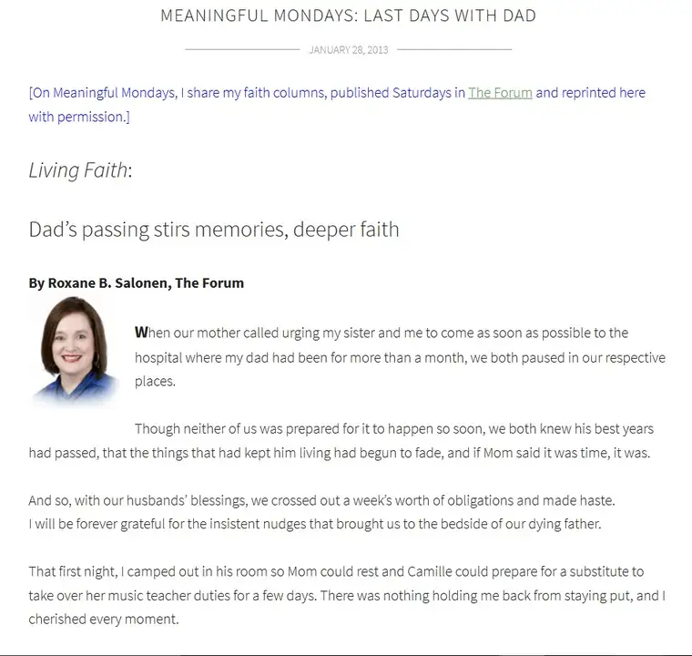
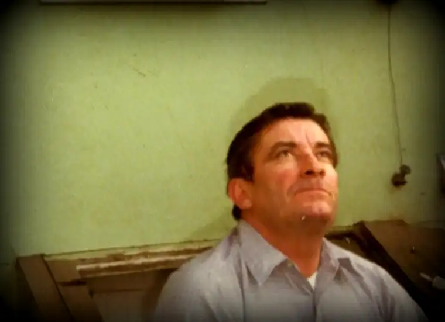

Certainly, it’s not quite as vivid or breathtakingly difficult as in the first year after his passing, but commemorating my father’s death has yet to cross my life without some deep reflection and even more, deep feeling.
This year, it came first while dining for lunch with my daughter. We were talking about something else entirely, and then it jutted forth. “Grandpa died, four years ago.” “To the day?” she asked. “Well, tomorrow, but…it feels like today.”
That’s because Dad died just an hour after midnight, and so it was really Jan. 10, 2013, when the memories are most embedded. We spent most of the actual day, the 11th, planning his funeral, doing what had to be done, moving through the fog. But the day prior is when we were hovering near him, wondering what we could do to make this easier, and when it would happen, and how. We’d been assured there wasn’t much time but, like with the birth of a child, unless it’s a C-section, you never know the moment until it happens.
And so I have spent the last 48 hours or so with Dad on my heart in a way that has gone a little more intensely than the everyday sort of remembrance. The grief isn’t enough to cause a disruption of my activity, but I sense him and find myself asking God to hold me through these moments of reckoning that are especially difficult.
Jan. 11 will always mean something to me. It will always make me pause. It will always bring me back, for better or worse. Because there was a little bit of each mixed into that day, after all.
It makes sense to share how it went down. I’d just started writing my faith column for The Forum. The month he died was my inaugural month. In fact, in one of the last conversations we had, I told him about the “new gig.” My very first “Living Faith” column ran the day after his death, which was on a Friday. I had to send a note to my editor to include an addendum, since the column had been about my father falling ill, and that was now outdated. I had to get the note to her before press time that he was gone.
A few weeks later, I wrote another reflection, sharing about that actual day, our last full day with him, which you can read here.

Dad will always be entwined with my writing, and my “Living Faith” column in particular. My first run with it was about him, and several others have been, too, as I’ve continued processing the loss of him. I am grateful for the chance to do so. I am grateful for the gift he bestowed on me through his love of the written word. I am grateful to have been there to help him let go. But I’d be lying if I said I wouldn’t have minded just a little more time with him.
Today, I heard a radio testimony of someone who had grown up with a faith tradition that believes, as she said, that after death, the soul dies, too. This thought was too much for her to bear as she parted with loved ones, and eventually drew her toward the Catholic faith, her father’s childhood faith, which has an entirely different, and more positive, view of death.
Thank you, Lord, for the insight that allows us to see that “this is not our lasting city” (Hebrews 13:14).

I miss you, Dad. See you soon!
Q4U: How does knowing this world is not our eternal city shape you?